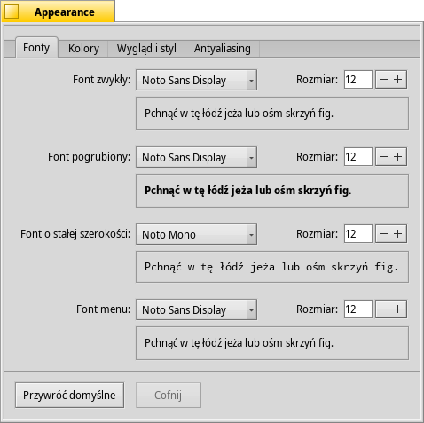

Polski
Polski Català
Català Deutsch
Deutsch English
English Español
Español Français
Français Italiano
Italiano Magyar
Magyar Português
Português Português (Brazil)
Português (Brazil) Română
Română Slovenčina
Slovenčina Suomi
Suomi Svenska
Svenska 中文 ［中文］
中文 ［中文］ Русский
Русский Українська
Українська 日本語
日本語 Wygląd
Wygląd
| Deskbar: | ||
| Ścieżka: | /boot/system/preferences/Appearance | |
| Ustawienia: | ~/config/settings/system/app_server/appearance ~/config/settings/system/app_server/fonts |
Preferencje wyglądu pozwalają Ci zmienić różne aspekty wizualne Haiku.
 Fonty
Fonty

Haiku definiuje trzy podstawowe fonty dla różnych zastosowań. Możesz ustawić fonty zwykły, pogrubiony oraz o stałej szerokości, a także ich wielkości używane przez system. Oprócz powyższych, istnieje też oddzielne ustawienie dla fontu menu.
Instalowanie nowych fontów
Nowe fonty, nie będące częścią paczki .hpkg, możesz zainstalować poprzez skopiowanie ich do odpowiedniego katalogu non-packaged zgodnego z typem fontu (psfonts lub ttfonts), (zobacz rodział Układ systemu plików). Przykład dla fontów TrueType:
| /boot/system/non-packaged/data/fonts/ttfonts/ | w przypadku fontów dostępnych dla wszystkich użytkowników. | |
| /boot/home/config/non-packaged/data/fonts/ttfonts/ | w przypadku fontów dostępnych tylko dla Ciebie. |
Kolory

Na karcie możesz ustawić kolory poszczególnych części interfejsu. Kontrolka koloru akceptuje upuszczenia z innych programów, pozwalając na przeciąganie kolorów z np. WonderBrusha, Icon-O-Matica lub panelu Tapet.
Dekoratory okien

Dekoratory definiują wygląd i styl okien oraz wszystkich elementów interfejsu. Aktualnie Haiku dostarcza tylko jeden dekorator. Jeżeli zainstalujesz więcej dekoratorów, będziesz mieć możliwość wyboru innego przy pomocy menu.
Domyślny dekorator Haiku pozwala ustawić styl strzałek pasków przewijania: albo pojedyncze na końcu pasków dla oszczędności miejsca, albo podwójne — tradycyjne dla BeOS-a — potencjalnie pozwalające zaoszczędzić ruchów myszą przy przewijaniu w górę i w dół lub w prawo i w lewo...
Antyaliasing

Karta pozwala modyfikować sposób rysowania rzeczy na ekranie.
Hinting glifów
Włączony wyrównuje wszystkie litery w taki sposób, że ich poziome i pionowe krawędzie znajdują się dokładnie pomiędzy dwoma pikselami. Rezultatem jest perfekcyjny kontrast, w szczególności w przypadku czarnego tekstu na białym tle. Font wygląda ostrzej. Możliwe jest także ustawienie hintingu , co jest szczególnie przydatne na urządzeniach z ekranami o niskiej rozdzielczości, takimi jak netbooki. W tym przypadku małe fonty mogą wyglądać bardzo źle, gdy hinting jest aktywny, jednak to ustawienie pozwala wykorzystać zalety hintingu w edytorach tekstu i Terminalu.
Zobacz różnicę, jaką robi hinting, na poniższych zrzutach ekranu:
 Hinting: wyłączony |  Hinting: włączony |
Zauważ, że także okna Magnify są narysowane z użyciem innych opcji. Dzięki temu możesz zobaczyć, jak sprawują się w rzeczywistych warunkach, porównując np. pogrubiony tytuł okna lub tekst „35 x 15 @ 8 pixels/pixel”.
Rodzaj antyaliasingu
Inną techniką poprawy jakości rysowania jest Antyaliasing, który obejmuje wszystkie grafiki wektorowe oraz tekst. Wygładza on tekst zmieniając kolory niektórych pikseli. Istnieją dwa jego rodzaje:
zmienia intensywność pikseli na krawędziach.
jest lepszy, szczególnie w połączeniu z monitorami LCD (o wysokiej rozdzielczości). Zamiast intensywności piksela, zmieniany jest jego kolor, co przesuwa krawędź o ułamek piksela, ponieważ piksele w ekranach LCD składają się z podpikseli czerwonego, zielonego i niebieskiego.
Poniżej porównanie tych metod:
Skala szarości, hinting: wyłączony | Podpikselowe LCD, hinting: wyłączony |
Antyaliasing podpikselowy nadaje obiektom drobną kolorową poświatę. Nie każdy za tym przepada. W Haiku możesz wymieszać obie metody i znaleźć dla siebie odpowiednie ustawienie używając suwaka.
Jeśli aktywujesz hinting z podpikselowym antyaliasingiem zmieniając źródła i rekompilując system, tak wypadnie on w porównaniu ze skalą szarości:
Skala szarości, hinting: włączony | Podpikselowe LCD, hinting: włączony |
Na dole panelu znajdują się dwa przyciski:
| ustawia domyślne wartości dla każdego z pól. | ||
| przywraca ustawienia aktywne w momencie uruchomienia panelu preferencji. |